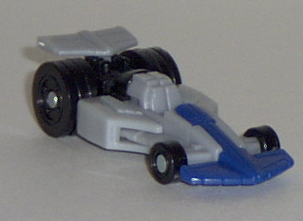
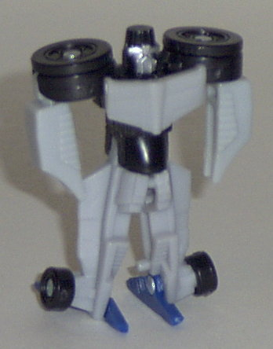
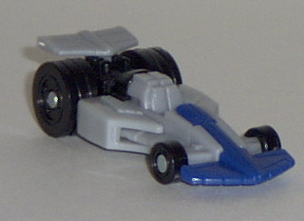
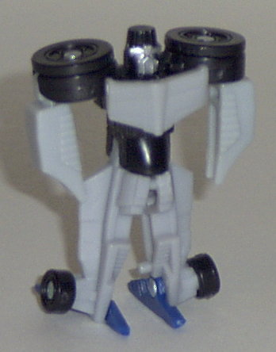
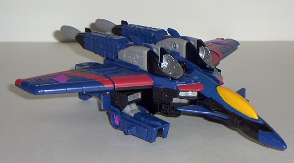
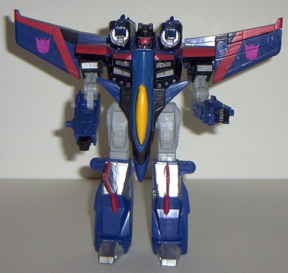

Zapmaster
Zapmaster
 
Allegiance : Minicon
Size : Mini-Con
Difficulty of Transformation : Very Easy
Color Scheme : Black, light gray, dark blue, and some silver
Rating : 3.9
(NOTE: Because this set is a repaint, this is not a full-blown review. This mainly covers any changes made to the mold and the color scheme, and merely compares it to Starscream w/ Swindle. For a review on the mold itself, read the review of Starscream w/ Swindle here .)
Zapmaster


Allegiance
: Minicon
Size
: Mini-Con
Difficulty of Transformation
: Very
Easy
Color Scheme
: Black, light gray,
dark blue, and some silver
Rating
: 3.9
Zapmaster isn't much
different from his predecessor Swindle, really. Basically just swap Swindle's
red with Zapmaster's light gray, make his face silver, and make the front
fin part dark blue, and you're done. Still, he's not the reason you buy
this set, anyways- that's reserved for Thundercracker. I do think that
this color scheme works a little better than Swindle's, though, if for
no other reason than the fact that Swindle has three primary shades of
color to him as opposed to Swindle's two. Nothing much to really talk about
besides that, though.
No mold changes have
been made to Zapmaster.
A slight improvement
color-wise over Swindle, but it's still the same yucky mold. Bleh.
 Thundercracker
Thundercracker


Allegiance
: Decepticon
Size
: Max-Con
Difficulty of Transformation
: Medium
Color Scheme
: Light gray, dark blue,
black, red, silver, and some "cheese" yellow, pinkish purple, and gray
Powerlinx ports
: 3 (1 gimmicked)
Rating
: 8.7
It's obvious from a first
glance that this toy is definitely a fan-nod to
G1
Thundercracker
, who had near the exact same color scheme as this guy
and also was a repaint of his generation's Starscream. And I'm pleased
to say that the color scheme works wonderfully this time around, too, if
not even better. The dark blue, silver, gray, and black go together flawlessly,
and there's plenty of color variation for everyone. The yellow cockpit
at first may seem a bit out of place, considering that there's nowhere
else on Thundercracker that's the color yellow- until one looks back at
the G1 Thundercracker and realizes that HE has an orange-yellow cockpit,
as well. Nice touch, there. Plus, to mix things up a bit, he has different
paint applications is several areas than does his predecessor Armada Starscream-
such as the lines on his wings and paint apps on his legs. This helps lessen
the perception that he's "just a repaint". Only two small problems with
his color scheme; for one, his Decepticon symbols are still mere blobs
of paint, but in addition, they're also of a slight pinkish color. I don't
think I like that very much, I prefer it to stay the traditional purple...
Also, Thundercracker's face is red, and makes him look like he's blushing
or something. I understand they want him to look a bit less like Starscream
but a gray or black face would have been more sensible.
No mold changes have
been made to Thundercracker.
Thundercracker has a
great color scheme, and is a definite improvement over Starscream's coloration-
even though Starscream's color scheme certainly isn't bad in and of itself.
If you're going to get just one version of this mold, though, get
Skywarp
-
he's the best of the three Armada seekers, in my opinion.
Review by Beastbot